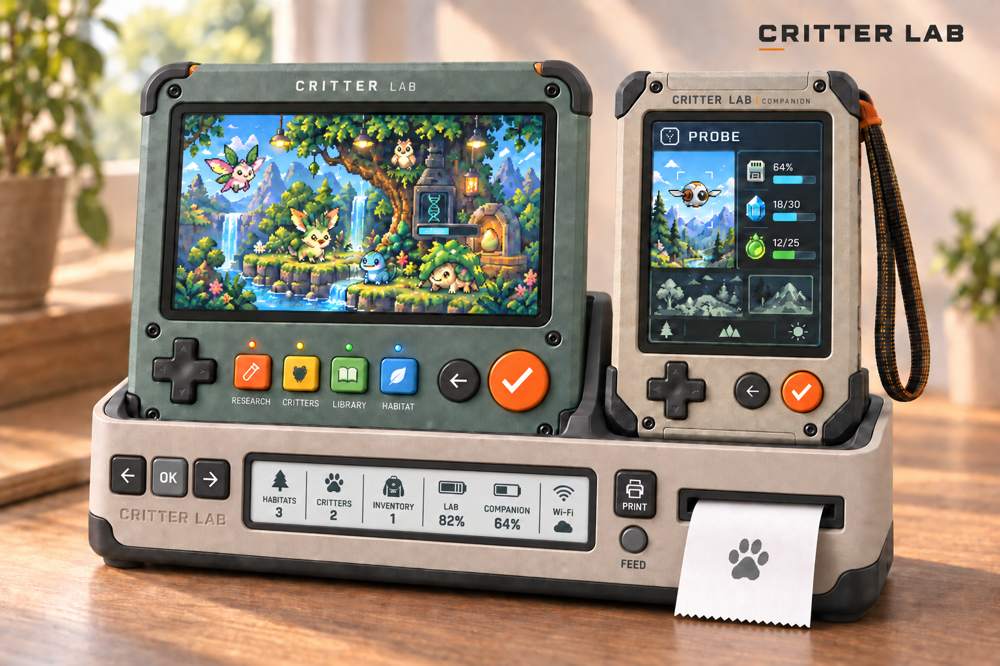
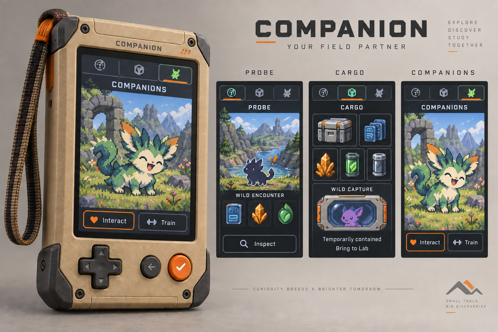

Go out.
Find something.
Choose an expedition and take the Companion along. Gather fictional supplies, discover samples and encounter wild critters. Bring your findings back when you’re ready to investigate.
Explore / Gather / ReturnA world of critters.
A genome of possibilities.
Explore, investigate, create and breed. A deep fictional genomics system connects each critter’s inherited traits, abilities and family history.
Meet Critter Lab
A sandbox about discovering how unusual creatures work—and deciding what you want to bring into the world.
Choose an expedition and take the Companion along. Gather fictional supplies, discover samples and encounter wild critters. Bring your findings back when you’re ready to investigate.
Explore / Gather / ReturnBuild a collection of samples at the Lab. Research reveals inherited variants and the relationships between them. Keep your findings across expeditions, gather what the next study needs and continue the same investigation.
Observe / Research / UnderstandDecode all required genomic information, choose a supported configuration and create a founder. Get to know it, train it and explore compatible breeding to carry distinctive variation into future generations.
Create / Connect / BreedThe game being designed. Current software previews show individual parts of this journey.
Underneath the creatures is a layered genomics framework: inherited instructions, rules for expression, the traits that emerge, and the experiences of a lifetime. It’s fictional genetics, inspired by the richness of heredity.
A trait can draw on several genes. One variant can influence several properties. Genes can change one another’s effects, while regulatory variants help determine how inherited instructions are expressed.
That creates room for connected variation in body structure, markings, movement, senses, metabolism and more.
The genome is the inherited information. The phenotype is what those instructions produce: appearance, capabilities, affinities and available abilities.
Development and environment help shape expression. Current fatigue, hunger and experience affect performance while remaining distinct from inherited genes.
Compatible parents contribute inherited variants. A critter can carry a variant without visibly showing it, giving research and family history real value when choosing a pairing.
Selection can strengthen a heritable trait or help it appear more reliably across a lineage. Each offspring still has its own combination and identity.
Inherited structures and physiological traits support abilities such as burrowing or light production. Abilities have prerequisites, resource needs and conditions for use.
Expressed traits also shape innate behavioral tendencies. Practice develops control and learned behavior; memories and training belong to the individual’s life story.
The depth underneath: polygenicity means several genes contribute to a trait; epistasis means genes influence one another’s effects; pleiotropy means one variant can influence several properties.
In the authored Pip example, two unmarked parents can both carry the pale-markings variant p. Their P/p genomes explain something their appearance alone cannot tell you.
When each parent contributes one copy with equal probability, this single-locus cross has three possible outcomes.
| Parent B: P | Parent B: p | |
|---|---|---|
| Parent A: P | P/PNo pale variant | P/pVariant carried |
| Parent A: p | P/pVariant carried | p/pPale markings expressed |
25% pale markings
50% carry p, unmarked
25% no p, unmarked
Conditional chance per offspring in this compatible, two-copy example, evaluated in its adult reference context. Four births need not produce one of each outcome. This is an illustration of the authored model, not a forecast from the live preview.
The broad genomics framework is the game’s design foundation. The current executable genetics proof covers one qualitative Pip fixture with five variable loci and a fixed baseline; the wider systems described here are still being developed. Read the genetics framework.
Something to take with you.
Somewhere to follow a hunch.
A home to come back to.
One portable, three views: Probe for exploring, Cargo for carried findings, and Companions for spending time with your travelling critters.
Wild captures stay distinct from bonded companions. Finding a critter is only the beginning of its story.
Probe / Cargo / Companions
The Lab is where samples become discoveries. Investigate inherited possibilities, experiment with supplies, build your collection and choose what to create.
Pick it up to explore at home. When docked, the intended living display brings habitats, critters and ongoing research into view.
Research / Create / DiscoverThe caddy is designed to charge the Lab and Companion, print records, and keep a persistent summary of habitats, residents, bulk inventory and device status.
The Lab carries the visual living world. The caddy keeps the overview close by. Display technology and offline behavior are still being explored.
Charge / Print / Keep trackCollect for beauty.
Experiment for possibility.
Explore just because.
Pursue unusual markings, a useful ability or a lineage that thrives in a particular environment. There is no single ideal critter everyone has to make.
Your collection preserves individuals and their histories. Another player’s discovery stays theirs: scanning a critter doesn’t grant ownership or breeding permission.
Use gathered supplies to try combinations, follow clues and discover useful recipes. Your encyclopedia retains what you learn for the next experiment.
Explore environments with their own populations, resources and conditions. Inherited affinities help explain where a critter may thrive; exact habitat simulation rules are still being designed.
Return to partially decoded samples, compare new findings with familiar families, and decide which investigation or lineage deserves your attention next.
From a little screen
to your field notebook.
The caddy’s intended printer brings the collection into the physical world. A critter record can become something to keep, compare or share alongside the instruments you play with.
We’re exploring specimen cards, research records and family-tree prints: paper that preserves an individual’s identity and tells the story behind a discovery. Print formats and printer integration are still in development.
Open source invites you to look inside the game as well: inspect the genetic rules, study the code and follow the hardware designs as they develop.
We’re building Critter Lab in the open. Explore the current Lab preview, or look under the hood at the designs, rules and source.
Not yet. Critter Lab is in design and prototyping. The images show concept studies, and the project is not yet a complete buildable kit. A release date and selling price have not been announced.
The core direction is device-hosted configuration and everyday play without a required phone. Supporting software may complement the instruments. Exact offline behavior and synchronization are still being designed.
Yes, Lab-only investigation is part of the design. The Companion expands exploration and everyday critter interaction; it is not intended to be a requirement for every discovery.
Yes. The public project contains the product specifications, code and design studies. Software uses AGPL-3.0-only, hardware sources use CERN-OHL-S-2.0, and documentation and eligible artwork use CC-BY-SA-4.0.